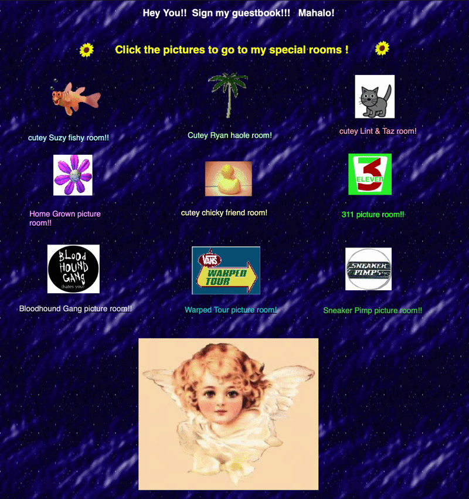

Animated GIFs and digital graphics were a major part of early internet websites. They were used to decorate websites, draw attention to important sections, and express personality. Unlike modern design, which often avoids too much movement, early websites embraced animation and bright visual effects.

GIFs (Graphics Interchange Format) are image files that can display simple animations. On early websites, GIFs were commonly used because they were small in file size and easy to add using basic HTML. These animations often looped continuously and became a recognizable feature of early web pages.


In addition to GIFs, early websites used various digital graphics such as pixel art, icons, smileys (similar to emojis), and tiled background images. These graphics were often handmade and shared across websites.
Icons
Smileys